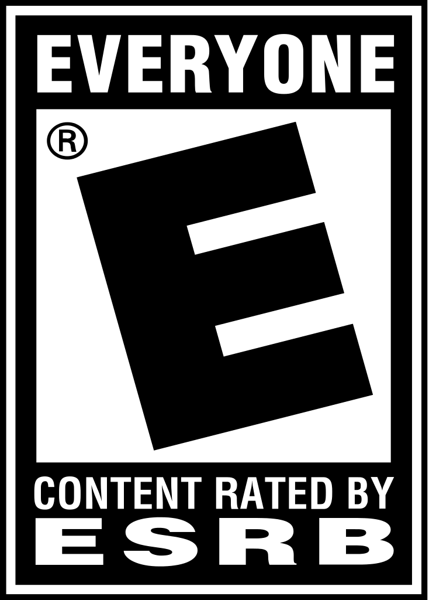

Listado de juegos de Nintendo
Nintendo es una de las grandes compañías históricas por antonomasia del mundo de los videojuegos.
Hacerle un listado es una ardua tarea que debe hacerse desde una perspectiva humilde y desenfadada, como sus videojuegos.

Review de Super Mario 64
Nuestra puntuación: 94 Puntuaciones Usuarios: 9.1 Género: Plataformas Número de jugadores: 1 jugador Rating: E
Autor: Nintendo
Review de The Legend of Zelda. Ocarina of Time
Nuestra puntuación: 99 Puntuaciones Usuarios: 9.1 Género: Aventuras y Acción Número de jugadores: 1 jugador Rating: E
Autor: Nintendo
Review de Final Fantasy VII
Nuestra puntuación: 78 Puntuaciones Usuarios: 8.1 Género: Videojuego de rol Número de jugadores: 1 jugador Rating: E
Autor: SQUARE ENIX
Review de Crazy Taxi
Nuestra puntuación: 90 Puntuaciones Usuarios: 7.1 Género: Carreras Número de jugadores: 1 jugador Rating: E
Autor: SEGA